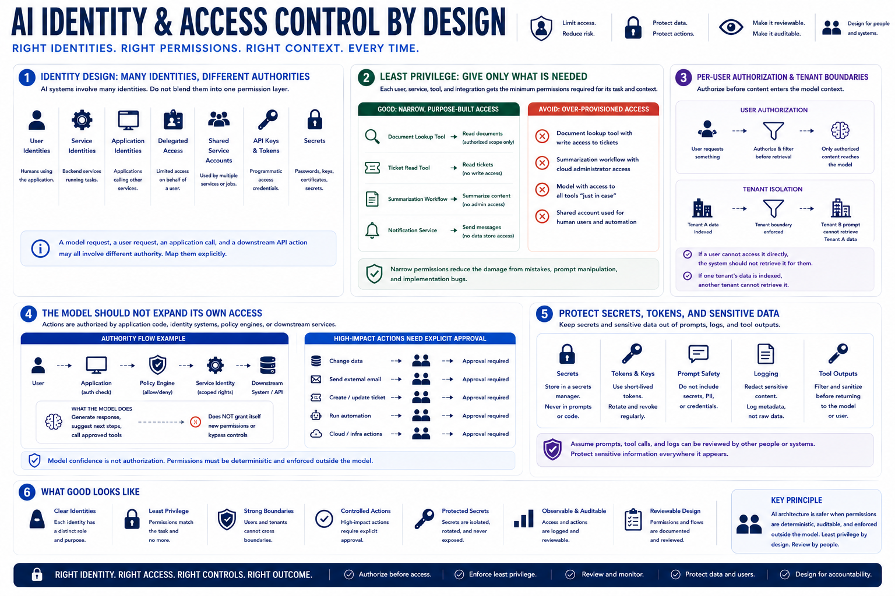

Identity, Access, and Least Privilege
Connecting to LMS... Progress: in progress

Narration
Identity design determines who or what is allowed to read data and take action. AI systems may involve user identities, service identities, application identities, delegated access, shared service accounts, API keys, tokens, and secrets. Those identities should not be blended into one vague permission layer. A model request, a user request, an application call, and a downstream API action may all involve different authority.
Least privilege means each user, service, tool, and integration receives only the permissions needed for its intended task and context. A document lookup tool does not need write access to tickets. A summarization workflow does not need cloud administrator privileges. A model should not receive every available tool by default just because the tools exist. Narrow permissions reduce the damage from mistakes, prompt manipulation, and implementation bugs.
Per-user authorization and tenant boundaries are especially important. If a user cannot access a document or customer record directly, the AI system should not retrieve it for them indirectly. If one tenant's data is indexed in a vector store, another tenant's prompt should not be able to retrieve it. Authorization should happen before sensitive content enters the model context, not after the model has already seen it.
The model should not be able to expand its own access. Actions should be authorized by application code, identity systems, policy engines, or downstream services, not by model confidence. Approval workflows should be explicit for high-impact actions. Secrets and tokens should be protected from prompts, logs, and tool outputs. AI architecture is safer when permissions are deterministic and reviewable outside the model.